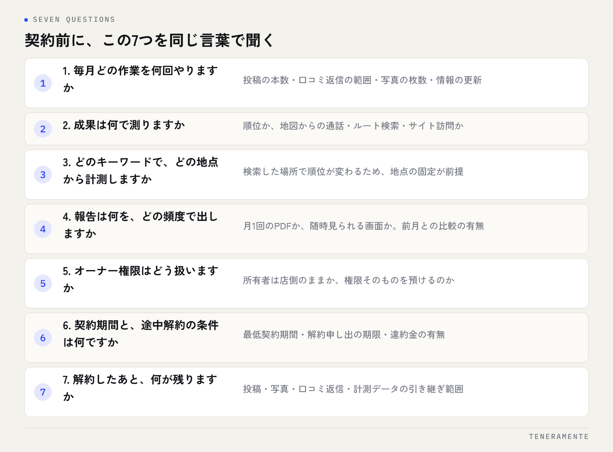

MEO対策の営業を受けたときに必要なのは、その場で相手の良し悪しを見抜くことではありません。持ち帰って比べられる形で情報を受け取ることです。聞く項目を先に決めておけば、電話でも訪問でも対応は同じ15分で終わり、あとで社内で落ち着いて判断できます。
📌 この記事の結論
MEO対策の営業に対しては、その場で契約の可否を決めず、作業の中身・成果の定義・契約条件・解約後の扱いの4点を書き取って持ち帰るのが確実です。7つの質問に即答できるかどうかで、提案の具体性はおおむね見分けられます。
01MEO対策の営業を受けたら、その場で決めない
MEO対策の営業は、電話・訪問・メールのいずれでも来ます。話の流れは「今の順位が低い」「機会損失が出ている」「今月だけ条件がある」という順に進むことが多いのですが、その場で結論を出す必要はまったくありません。
決めておくことは2つです。1つは、初回のやり取りでは契約しないと社内で決めておくこと。もう1つは、聞く項目をメモに用意し、誰が電話を取っても同じ項目を聞けるようにしておくことです。店長が不在のときに若手が受けても、項目が決まっていれば情報は欠けません。
営業を受けた時点でやることは、相手の話を評価することではなく、記録することです。会社名・担当者名・連絡先・提案の中身・金額・期間をその場で書き取り、「社内で検討しますので、資料をメールでお送りいただけますか」と伝えて終えます。資料の送付依頼は不自然な要求ではないので断られることはまずなく、送られてこない場合はそれ自体が判断材料になります。
受け取る側の準備は3つ
- 初回は契約しないという社内ルールを決める
- 聞く項目のメモを電話機の近くに置く
- 「資料をメールで」と言える言い回しを用意する
02営業の話は4つに分けて聞く
営業の説明は、そのまま聞くと「よさそうだ」か「怪しい」の印象だけが残りがちです。印象ではなく中身で判断するために、聞いた内容を次の4つに振り分けながら聞きます。あとで他社と比べるときに項目がそろいます。
1つめは事実の指摘です。「御社の情報に営業時間が入っていない」「写真が3枚しかない」といった、あとから自分で確かめられる話です。
2つめは手段の説明です。投稿を代行する、口コミの返信文を作る、情報を整備する、計測して報告する、といった実際にやる作業の話です。ここが具体的でないほど、契約後の作業範囲があいまいになります。
3つめは成果の約束です。順位がどうなる、問い合わせがどうなるという話で、最も慎重に聞く部分です。Googleの検索結果の順位は、こちらと相手の作業だけで決まるものではないため、確実な約束ができる領域ではありません。
4つめは契約条件です。期間、月額、初期費用、解約の方法、報告の頻度。金額の話は印象に残りやすいのですが、条件のほうが後から効いてきます。費用の内訳の読み方はMEO対策の費用相場と内訳に分けて書いています。
03契約前に聞くべき7つの質問
ここが本題です。以下の7つは、どの会社に対しても同じ言葉で聞けます。順番どおりに聞くと、相手の説明が具体的なほどスムーズに進みます。

- 毎月どの作業を何回やりますか。投稿の本数、口コミ返信の対応範囲、写真の追加枚数、情報の更新。「状況に応じて」だけの回答なら、回数の目安を聞き直します。
- 成果は何で測りますか。順位なのか、地図からの電話・ルート検索・サイト訪問なのか。測る指標と、測る方法を聞きます。
- どのキーワードで、どの地点から計測しますか。ローカル検索の順位は検索した場所によって変わるため、計測の地点が決まっていないと数字を比べられません。
- 報告は何を、どの頻度で出しますか。月1回のPDFか、随時見られる画面か。前月との比較が載るかどうかも聞きます。
- オーナー権限はどう扱いますか。Googleビジネスプロフィールの管理権限を預けるのか、こちらが所有者のまま相手を管理者として追加するのか。ここは契約後に変更しにくい部分です。
- 契約期間と、途中解約の条件は何ですか。最低契約期間、解約の申し出の期限、違約金の有無。
- 解約したあと、何が残りますか。投稿した内容、写真、口コミへの返信、計測したデータ。残らないものがあるなら、その範囲を確認します。
7つのうち、特に5と7は後回しにされやすい項目です。権限とデータの扱いは、契約の良し悪しというより店側の資産がどちらの手元に残るかの話なので、金額よりも先に確かめる価値があります。
04回答の読み方：答えがはっきりしているかを見る
回答を聞いたら、内容の良し悪しより先に「答えの形」を見ます。同じ質問に対して、具体的に答えられる場合とそうでない場合では、契約後に起きることが変わります。
| 質問 | はっきりした答えの例 | 聞き直したい答えの例 |
|---|---|---|
| 作業の中身 | 投稿は月4本、口コミ返信は全件、写真は月5枚 | しっかり運用します／お任せください |
| 成果の指標 | 指定キーワードの平均順位と、地図からの通話件数 | 効果が出るようにやります |
| 権限の扱い | 所有者は御社のまま、管理者として追加 | こちらで一括して管理します |
| 解約の条件 | 最低6か月、1か月前の申し出で解約 | そのあたりは柔軟に対応します |
| 解約後の扱い | 投稿と写真は残り、計測データは解約時に書き出し | 特に決まりはありません |
「柔軟に対応します」「お任せください」は親切な言い方ではあるものの、比べる材料にはなりません。その場では「社内に説明するので、回数と条件を文字でいただけますか」と頼むのが角の立たない聞き返し方です。文字で出せるかどうかが、そのまま答えの確かさになります。
聞き直すときの言い方
「疑っているのではなく、社内で比べる形をそろえたいので」と前置きすると、ほとんどの場合そのまま書面が出てきます。相手を試す口調にする必要はありません。
05気をつけたい説明の型と、その場での聞き返し方
ここで扱うのは特定の会社の話ではなく、説明の型です。同じ型の説明は複数の会社で出てくるので、型として覚えておくとその場で慌てません。
順位を保証するという説明。Googleの検索結果は提供側の仕組みで決まるため、第三者が結果そのものを約束できる領域ではありません。「保証」という言葉が出たら、「保証の条件と、達成できなかった場合の扱いを書面でいただけますか」と聞きます。
今日だけ、今月だけという説明。期限を区切る案内自体は珍しくありませんが、判断を急がせる材料として出たときは「同じ条件が来月も使えるか」を確認します。使えないと言われたら見送って構いません。MEOの運用は急いで始めて得をする作業ではありません。
Googleの代理・公認という説明。Googleビジネスプロフィールは店舗が無料で作成・管理できるもので、特定の会社を通さないと登録できないわけではありません。公認や代理という言葉が出たら、何に対する立場なのかを具体的に聞きます。
作業内容を明かさないという説明。独自の手法だから説明できない、という返答もあります。手法の詳細まで聞く必要はありませんが、毎月どの作業が何回発生するかは契約の対象なので、そこが出てこない場合は比較から外すのが無理のない判断です。
いずれの型でも、否定から入る必要はありません。「書面でいただけますか」の一言で、ほとんどの論点は持ち帰れます。
06資料と見積もりで確かめる箇所
資料が届いたら、読む順番を決めておくと短時間で済みます。見積書は金額から見がちですが、先に作業の単位をそろえるほうが早く判断できます。
注意したいところ
「MEO対策一式」とだけ書かれた見積書は、金額が妥当かどうかを判断できません。内訳が1行の見積書が届いたら、作業ごとの行に分けたものを依頼してください。
届いた資料のチェックリスト
- 月額に含まれる作業と、含まれない作業（オプション）が分かれて書かれているか
- 投稿・口コミ返信・写真・情報更新の、それぞれの回数や範囲が数で書かれているか
- 初期費用の中身（初期設定、キーワード選定、現状調査など）が行に分かれているか
- 最低契約期間と、解約の申し出の期限が書かれているか
- オーナー権限の扱いが書かれているか
- 解約後に残るもの・引き継げるものと、報告物の形式と頻度が書かれているか
2社以上から資料が届いたら、上の項目を横に並べた表を1枚作ります。同じ月額でも含まれる作業の数が違うことがよくあります。自店で一部を内製する前提なら、MEO対策を自分でやる手順と照らして、任せる範囲だけを見積もってもらう進め方もできます。契約の型そのものを比べたい場合は成果報酬型と月額固定型の違いも参考になります。
07よくある失敗とその避け方
営業を受けた側で起きやすい失敗は、判断を間違えることよりも、手順を決めていないことから生まれます。
その場で口頭で承諾してしまう。「とりあえず進めておきます」と言われ、流れで了解してしまう例です。初回は契約しないという社内ルールを先に決めておくだけで避けられます。
オーナー権限を渡したまま忘れる。管理を任せるために権限を預け、担当者が代わって連絡が途切れると、自店のプロフィールを自分で編集できなくなります。所有者は店側のままにし、相手は管理者として追加する形にしておくのが安全です。
解約条件を読まずに契約する。最低契約期間と解約申し出の期限は、始めるときに最も読まれにくい部分です。契約書の該当箇所だけでも社内で読み合わせます。
比較せずに1社で決める。悪い選択とは限りませんが、作業量の相場が分からないまま続きます。最低2社の資料をそろえると、金額ではなく作業の量で比べられます。
社内で誰が窓口か決まっていない。営業を受ける人、資料を読む人、契約を決める人が別だと、情報が途中で止まります。受けた内容を書き取るメモの置き場所と、渡す相手を決めておきます。
08自分で進める場合と、専門家に任せる場合の分かれ目
ここは一般論として、判断の基準だけを整理します。どちらが優れているという話ではなく、店舗の人手と続けられるかどうかで決まります。
自分で進める形が向くのは、店舗が1〜2店で、情報の更新や写真の追加を毎月担当できる人がいる場合です。投稿や口コミ返信は、現場を知っている人が書いたほうが内容が具体的になります。担当と頻度を決めて回せるなら内製で足ります。
専門家に任せる形が向くのは、店舗数が多くて同じ作業を横に広げる必要がある場合、計測を自分では続けられない場合、担当者の異動が多くて手順が引き継がれにくい場合です。特に順位の計測は、地点とキーワードを固定して毎日取り続ける作業なので、人手で続けるには向きません。
分かれ目をひとつに絞るなら、毎月決まった日に同じ作業を回せる人が社内にいるかです。いるなら内製から始め、足りない部分だけを外に出す。いないなら、最初から任せる範囲を決めて依頼したほうが、中途半端に始めて止まるより結果が出ます。任せる場合も、報告を読んで判断する役割は店側に残ります。ここを誰が担うかまで決めてから契約するのが、長く続く形です。
09よくある質問
営業電話をその場で断っても問題ありませんか？
Googleビジネスプロフィールの登録は、業者を通さないとできませんか？
オーナー権限を預けてしまった場合、戻せますか？
見積もりは何社からもらうとよいですか？
順位が上がらなかったら解約できますか？
10まとめ：聞く項目を決めておくと、営業は情報源になる
MEO対策の営業は、断るか契約するかの二択ではありません。聞く項目を決めておけば、相手の説明は自店の現状を知る材料になります。そのうえで、7つの質問に書面で答えが返ってくる相手だけを比較の対象にすれば、判断は難しくありません。
TENERAMENTEなら、この記事で挙げた「計測の地点とキーワードが決まっていない」「報告が月1枚のPDFで前月と比べられない」という詰まりに対して、自社開発のMEOツールで順位をエリア単位のヒートマップと日次のグラフとして見られるようにし、投稿・写真の管理や口コミ返信のAIドラフト、PDFと共有リンクでの自動レポートまで含めてMEO/AIO運用代行としてお引き受けできます。どの地点のどのキーワードが動いたかが画面で分かるので、報告を待つあいだに「今月は何をしたのか」を確かめる手間がなくなります。まずは現状の順位計測からでも構いませんので、お問い合わせからお気軽にご相談ください。